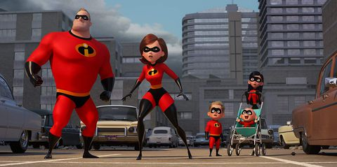

劇情從超人特攻隊的最後開始，一家人準備對付採礦大師，講述因為他們在城市打擊罪犯我造成的破壞， 迫使政府停止超級英雄專案，於是無家可歸的超人一家再一次的機會中認識了仰慕超級英雄的年輕企業家， 他提出以彈力女超人為主打，讓大眾對超級英雄改觀，故事也就此開始。
而第二集中故事想表達的核心-家庭，在媽媽外出任務的時候，超級先生擔當起一家人的生活， 他內心非常想要外出工作表現給大家看，但同時他又要對得起超人的名號照顧好Violet、Dash、Jack Jack， 要幫姊姊解決戀愛煩惱，要教哥哥被改得很奇怪的數學算法，還要應付超能力十八般的小嬰兒，超人先生真的付出很多努力啊！

第二集中的壞人利用螢幕洗腦，這同時也在告訴我們，現在生活中大家非常容易被電視媒體影響， 而喪失了自我，媒體一開始只報導了超人一家打擊犯罪所造成的破壞並沒有說明他們免除了什麼， 也因此大眾認為超人是導致破壞的存在，看來導演想告訴我們小心被媒體蒙蔽了雙眼。
題外話：小傑真的超級可愛的！大家有機會一定要去看喔！